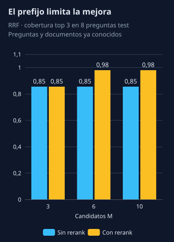
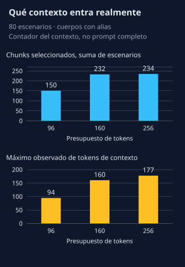
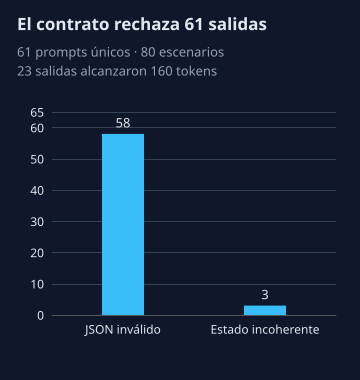
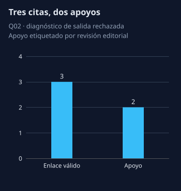
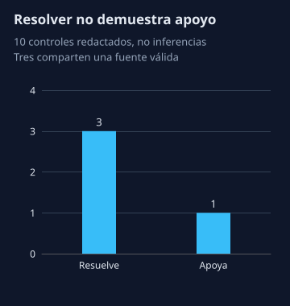
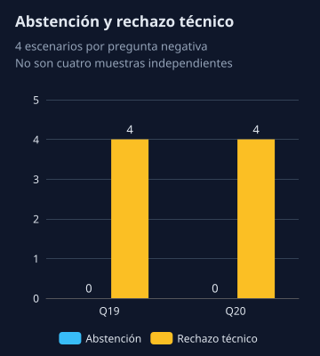
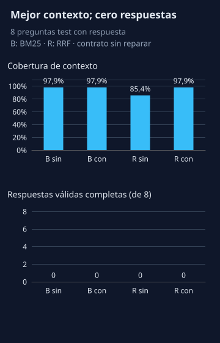

Del ranking a la respuesta
Datos de inferencias locales reales sobre tres documentos sintéticos conocidos. El navegador no ejecuta modelos. Las 61 salidas únicas fueron rechazadas por el contrato; ninguna se muestra como una respuesta validada.
Cargando capturas…
Código, protocolo y salidas originales
El cross encoder reordena candidatos
Las líneas representan posiciones, no escalas comparables de BM25/RRF y logits.
| Alias | Antes | Después | Logit |
|---|
Qué evidencia permite el prefijo
Antes
Después
Candidatos y métricas completas

Contexto entregado, sin recortar chunks
Descartes y motivos
Texto renderizado contado

Salida original y validación de contrato
Texto generado, rechazado
Resultado exacto del parser
Prompt y fuentes suministradas

Una afirmación y su apoyo
Diagnósticos editoriales de salidas rechazadas. No son respuestas aceptadas ni una segmentación exhaustiva de todas las afirmaciones. La existencia del enlace se comprueba automáticamente; la relación semántica tiene etiqueta editorial del asistente, sin adjudicación independiente.
Extracto exacto de la salida
Texto de contexto usado en la revisión

Cita existente y afirmación apoyada son pruebas distintas
Controles redactados para el laboratorio, separados de las salidas del modelo. Los enlaces manipulados muestran un error explícito en el visor de fuentes.
Control y resolución

Rechazo técnico y abstención del modelo
Un texto no validable produce un rechazo técnico. No lo contamos como una abstención correcta del modelo ni como una respuesta que puede mostrarse al lector.

Comparar contexto y respuestas por separado
La cobertura de contexto se calcula sobre preguntas con respuesta. Formato incluye también las negativas del conjunto. Ninguna salida se reparó para convertirla en respuesta válida.
| Primera etapa | Rerank | Formato válido | Cobertura contexto | Respuestas completas | Grounded |
|---|
